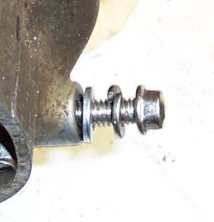
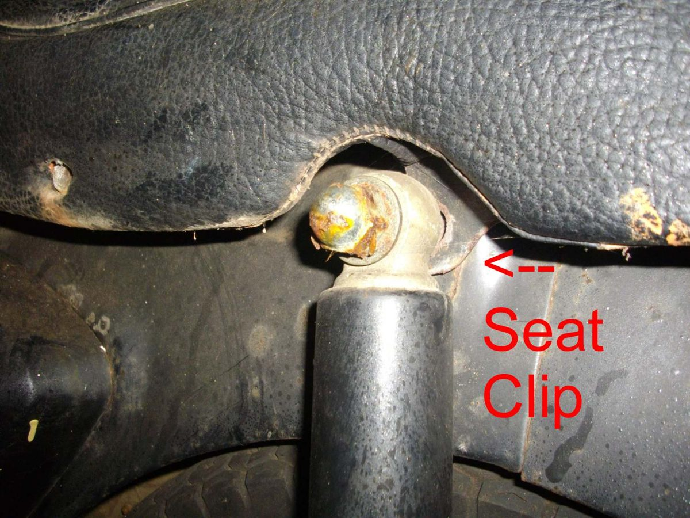

Home mechanic (basic tools) · Time: 20 to 60 min (estimate) (estimate)
Most rattles come from something small: a missing rubber grommet, a broken plastic tab, a loose number plate or a heat shield. Finding the source is the hard part. This job uses three questions (when, where, what changes it) and a touch test to find it.
Safety
- Engine running tests: bike on the centre stand in neutral, outside. Keep hands away from the chain, wheel, exhaust and engine fins, which get very hot.
- Never cable-tie anything to a brake hose or to the exhaust.
Step 1: When does it rattle?
- At one engine speed, also with the bike standing still: something shaken by the engine. Heat shield, exhaust, side panel, chain guard, mirror, battery or toolkit.
- Only over bumps: something loose on the chassis or suspension. Number plate, mudguard, seat, carrier, panel, stand, or a suspension or brake noise.
- With road speed, not engine speed: wheel area, chain, sprocket, brake, speedo drive.
- When braking: brake pads, caliper, fork. See Clunk from the front when braking.
Step 2: Find it
- Engine off. Tap each panel, the mudguards, the number plate, the chain guard and the exhaust shields with your hand or a rubber mallet. Listen for a buzz.
- Push and pull the seat, the grab rail, the carrier, the mirrors and the indicator stalks.
- Engine running at the speed where it rattles (a helper holds the throttle). Wearing gloves, touch panels and brackets lightly one at a time. When the rattle stops, you have found it.
- Open the seat and side panels. Check the battery hold-down, the toolkit and anything loose inside.
Step 3: Fix it
- Panel screws: tighten gently; self-tapping screws in plastic strip if forced (K-Light 125 body cover bolt: 9.0 N·m).
- Replace missing rubber grommets and well nuts. When refitting panels, line up every tab and hook; the K-Light manual warns not to break the hooks.
- Broken tab: put foam tape between the panel and frame at that point, or replace the panel.
- Number plate and mudguard: add washers and rubber spacers, use locking nuts.
- Heat shield: tighten its clamps or replace a broken one (Check exhaust mounts and heat shields).
- Chain guard rubbing: Check chain guides, sliders and guards.
- Then check the rest: Check chassis fasteners.
Check your work
- Repeat the same test (same engine speed, same bumps). The rattle has gone.
If it did not fix the problem
- The noise comes from inside the engine: Ticking noise from the top of the engine, Rattling noise from the cam chain area.
- From the chain: Chain is noisy. From the forks: Knocking or squeaking from the front forks. From the rear: Clunk from the rear suspension.